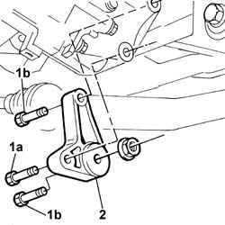
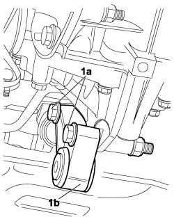
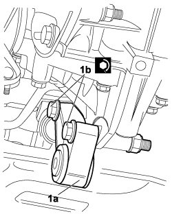

1008C34 BRACKET ON GEARBOX FOR LOWER REACTION ROD - R.R.
- Path
- Procedures > 10 ENGINE > 1008 POWER UNIT SUPPORTS > 1008C POWER UNIT REACTION ELEMENTS > 1008C34 BRACKET ON GEARBOX FOR LOWER REACTION ROD - R.R.
- Kind
- repair procedure (removal / refitting; the operation number is the code)
- Applies to
- engines: 1.4 8v, 1.6 16v; all production periods
- Interactive page
- https://sloeber94.github.io/elrnDB-fDbl/en/#/2584334
Applies to: engines: 1.6 16v; all production periods
 Removing
Removing
 Refitting
RefittingPosition the vehicle on a lift.
Disconnect the negative battery terminal.
Description | Connector | |
|---|---|---|
- | Battery |
1. Unscrew bolt (1a) and screws (1b) securing the battery to the reaction rod.
2. Remove the bracket on the gearbox for the reaction rod.

Applies to: engines: 1.6 16v; all production periods
Refitting
RemovingPlace the bracket for the reaction rod in its housing on the gearbox and tighten the fixing bolts to the recommended torque.
Fastening | Component | dia | Value (daNm) | |
|---|---|---|---|---|
- | Bolt | BRACKET ON GEARBOX FOR REACTION ROD | M12 X 1.25 | (Differential side) 7 |
Tighten the bolt fixing the reaction rod to the recommended torque.
Fastening | Component | dia | Value (daNm) | |
|---|---|---|---|---|
- | Nut | BRACKET ON GEARBOX FOR LOWER LINK | M12 X 1.25 | (Gearbox side) 7 |
Connect the negative battery terminal.
Description | Connector | |
|---|---|---|
- | Battery |
Remove the vehicle from the lift.
Applies to: engines: 1.4 8v; all production periods
Removing
RefittingPosition the vehicle on the lift.
Turn the ignition key to the OFF position.
Disconnect the negative battery terminal.
Description | Connector | |
|---|---|---|
- | BATTERY |
Op. 7055B54 PROTECTION/GUARD UNDER ENGINE - R.R.
Op. 1008C30 POWER UNIT LOWER REACTION LINK - R.R
1. Undo the bolts (1a) and remove the bracket on the gearbox for the reaction rod (1b).

Applies to: engines: 1.4 8v; all production periods
Refitting
Removing1. Position the bracket for reaction rod (1a) in its seat on the gearbox, screw in bolts (1b) and tighten to the specified torque.
Fastening | Component | dia | Value (daNm) | |
|---|---|---|---|---|
1b | Bolt | BRACKET FOR REACTION ROD ON ENGINE | M12 X 1.25 | 6.3 ÷ 7.7 |

Applies to: engines: 1.4 8v; all production periods
Op. 1008C30 POWER UNIT LOWER REACTION LINK - R.R
Op. 7055B54 PROTECTION/GUARD UNDER ENGINE - R.R.
Remove the vehicle from the lift.
Connect the negative battery terminal.
Description | Connector | |
|---|---|---|
- | BATTERY |
Remove the vehicle from the lift.